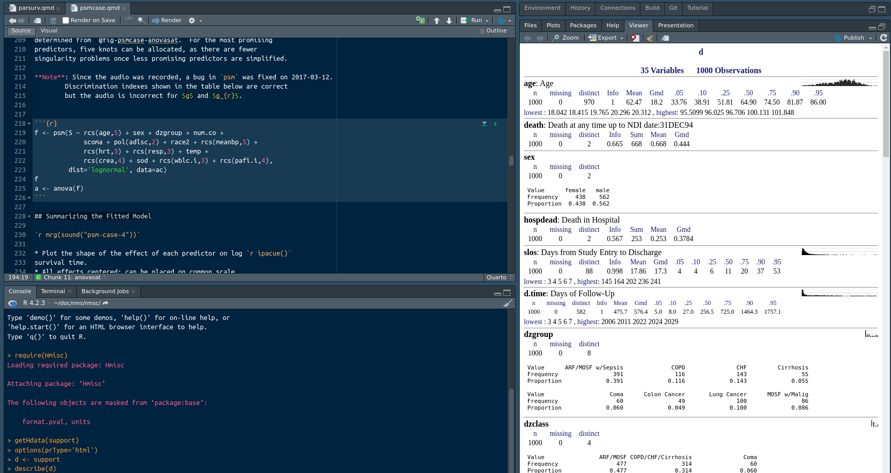

flowchart LR O[Objects] --> N[Numeric] --> Nt[integer<br>floating point<br>date/time] O --> NN[Non-Numeric] --> log[logical] & ch[character] & F[function] O --> Sh[Shape] --> Shs[scalar<br>vector<br>matrix<br>array] Sh --> Li[list] Li --> df[data.frame] & dt[data.table] & it[irregular tree] O --> Ad["Addressing<br>(subscripts)"] --> sub[integer<br>logical<br>names] O --> SV[Special Values] --> na[NA] F --> cf[Common Functions<br>Write Your Own] Dec[Decisions] --> btypes[if<br>ifelse<br>switch]
3 R Basics
3.1 Assignment Operator
You assign an R object to a value using the assignment operator <- or the equal sign. <- is read as “gets”.
x <- y
d <- read.csv('mydata.csv')
x = y3.2 Object Types
Everything in R is an object. This includes functions, as demonstrated in the example below.
f <- sqrt # copy the square root function as f
f(16) # equivalent to sqrt(16)[1] 43.2.1 Object Names
The names of objects are always case-sensitive in R. If the age variable is named Age, typing age may result in an “object not found” error. Valid symbols in object names are upper and lower case letters, numbers, periods, and underscores. A name may not begin with a number. There are contexts in which you may include any characters in object names, including spaces:
- for extracting columns in data frames, data tables, matrices, and lists you can single- or double-quote the name, e.g.
mydata[, "age in years"] - for wider contexts (e.g. statistical model formulas) you can put single back-ticks around the name
3.2.2 Objects
Some primitive types of objects in R are below.
| Type | Meaning |
|---|---|
| integer | whole numbers |
| logical | values of TRUE or FALSE |
| double | floating point non-whole numbers |
| character | character strings |
| function | code defining a function |
In the table below, objects of different shapes are described. rows and cols refers to vectors of integers or logicals, or if the elements of the object are named, character strings.
| Type | Example | Values Retrieved By |
|---|---|---|
| scalar | x <- 3 |
x |
| vector | y <- c(1, 2, 5) |
y[2] (2), y[2:3] (2, 5), y[-1] (2, 5), y[c(TRUE,FALSE,TRUE)] (1, 5) |
| named vector | y <- c(a=1, b=2, d=5) |
y[2] (2), y['b'] (2), y[c('a','b')] (1, 2) |
| matrix | y <- cbind(1:3, 4:5) |
y[rows,cols], y[rows,] (all cols), y[,cols] (all rows) |
| array | y <- array(1:30, dim=c(2,3,5)) |
y[1,1,1] (1), y[2,3,5] (30) |
| list | x <- list(a='cat', b=c(1,3,7)) |
x$a (‘cat’), x[[1]] (‘cat’), x[['a']] (‘cat’) |
Named vectors provide an extremely quick table lookup and recoding capability.
list objects are arbitrary trees and can have elements nested to any level. You can have lists of lists or lists of data frames/tables.
Vectors can be of many different types when a class is added to them. Two of the most common are Dates and factors. Character strings are handled very efficiently in R so there is not always a need to store categorical variables as factors. But there is one reason: to order levels, i.e., distinct variable values, so that tabular and graphical output will list values in a more logical order than alphabetic. A factor variable has a levels attribute added to it to accomplish this. An example is x <- factor(x, 1:3, c('cat', 'dog', 'fox')) where the second argument 1:3 is the vector of possible numeric values x currently takes on (in order) and the three character strings are the corresponding levels. Internally factors are coded as integers, but they print as character strings.
Rectangular data objects, i.e., when the number of rows is the same for every column (variable), can be represented by matrices, arrays, data.frames, and data.tables. In a matrix or array, every value is of the same type. A data.frame or a data.table is an R list that can have mixtures of numeric, character, factor, dates, and other object types. A data.table is also a data.frame but the converse isn’t true. data.tables are handled by the R data.table package and don’t have row names but can be indexed, are much faster to process, and have a host of methods implemented for aggregation and other operations. data.frames are handled by base R.
See Section 18.2 for an example of using arrays with named elements
Data frames are best managed by converting them to data tables and using the data.table package. When data.table is not used there are three indispensable functions for operating on data frames:
withfor analyzing variables within a data frame without constantly prefixing variable names withdataframename$transformfor adding or changing variables within a data frameHmiscupDatafunction for doing the same astransformbut also allowing metadata to be added to the data, e.g., variable labels and units (to be discussed later)
Here are some examples of with and transform.
# Better than mean(mydata$systolic.bp - mydata$diastolic.bp) :
with(mydata, mean(systolic.bp - diastolic.bp))
# Better than mydata$pulse.pressure <- mydata$systolic.bp - mydata$diastolic.bp:
mydata <- transform(mydata,
pulse.pressure = systolic.bp - diastolic.bp,
bmi = wt / ht ^ 2)
# Perform several operations on the same data frame
with(mydata, {
x3 <- x1 / sqrt(x2)
ols(y ~ x3)
} )3.3 Dates and Time
R and add-on packages provide many ways to process dates and date-time variables. Let’s look at methods provided by base R. The most standard date format is ISO 8601 with its YYYY-MM-DD format, and character variables in this format are easily converted to numeric date form using the as.Date function on which arithmetic and statistical analysis can be performed. The date is stored internally as the number of days from 1970-01-01. as.Date will also convert from other formats. Here are some examples, which include computing days between dates. Unlike these examples the most common date conversions occur on imported character vectors. Some other functions exemplified below are
difftime: compute differences between dates in days or monthsweekdays: retrieve the name of the day of the week for given datesseq: regularly sequence datesformat: reformat dates and extract year, month, or daySys.date,Sys.time: current date or date/time
as.Date('1970-01-01')[1] "1970-01-01"unclass(as.Date('1970-01-01')) # 0 since 1970-01-01 is the default origin[1] 0as.Date('01/02/2023', format='%m/%d/%Y')[1] "2023-01-02"as.Date('1/2/2023', format='%m/%d/%Y')[1] "2023-01-02"as.Date('1/2/23', format='%m/%d/%y') # not safe for wide date ranges[1] "2023-01-02"as.Date('2jan1960', format='%d%b%Y')[1] "1960-01-02"x <- as.Date(c('2023-02-01', '2023-03-01'))
x[1] "2023-02-01" "2023-03-01"weekdays(x)[1] "Wednesday" "Wednesday"seq(x[1], x[2], by='week')[1] "2023-02-01" "2023-02-08" "2023-02-15" "2023-02-22" "2023-03-01"seq(x[1], x[2], by='2 weeks')[1] "2023-02-01" "2023-02-15" "2023-03-01"seq(x[1], x[2], by='month')[1] "2023-02-01" "2023-03-01"seq(x[1], x[2], by='year')[1] "2023-02-01"x[2] - x[1]Time difference of 28 daysx + 35[1] "2023-03-08" "2023-04-05"class(x[2] - x[1])[1] "difftime"as.numeric(x[2] - x[1]) # convert to regular numeric[1] 28as.numeric(x[2] - x[1]) / 365.25 # years + fraction[1] 0.07665982# The following is particularly good for statistical analysis of absolute dates
as.numeric(x - as.Date('2020-01-01')) / 365.25 # years + fraction since 2020-01-01[1] 3.085558 3.162218difftime(x[2], x[1])Time difference of 28 daysdifftime(x, as.Date('2000-01-01'))Time differences in days
[1] 8432 8460difftime(x, as.Date('2000-01-01'), units='weeks')Time differences in weeks
[1] 1204.571 1208.571format(x, '%Y')[1] "2023" "2023"format(x, '%m')[1] "02" "03"format(x, '%d')[1] "01" "01"as.numeric(format(x, '%m'))[1] 2 3format(x, '%A')[1] "Wednesday" "Wednesday"format(x, '%a')[1] "Wed" "Wed"Sys.Date() # today[1] "2025-12-02"Sys.time() # current date and time[1] "2025-12-02 16:26:34 CST"For storage of date-time variables it’s best to use the POSIXct class. Internally values are stored as seconds from midnight 1970-01-01. Here are some examples.
See the help files for
strptime and as.POSIXct.f <- '%Y-%m-%d %H:%M:%S'
as.POSIXct('1970-01-01 00:00:01', format=f) # uses current time zone[1] "1970-01-01 00:00:01 CST"as.POSIXct('1970-01-01 00:00:01', format=f, tz='GMT') # universal time zone[1] "1970-01-01 00:00:01 GMT"unclass(as.POSIXct('1970-01-01 00:00:01', format=f, tz='GMT')) # 1s past midnight 1970-01-01[1] 1
attr(,"tzone")
[1] "GMT"x <- as.POSIXct(c('2023-02-01 11:03:00', '2023-03-01 10:04:00'), format=f)
x[1] "2023-02-01 11:03:00 CST" "2023-03-01 10:04:00 CST"diff(x)Time difference of 27.95903 daysx[2] - x[1]Time difference of 27.95903 daysdifftime(x[2], x[1], units='days')Time difference of 27.95903 daysas.numeric(difftime(x[2], x[1], units='days'))[1] 27.95903difftime(x[2], x[1], units='weeks')Time difference of 3.994147 weeksdifftime(x[2], x[1], units='hours')Time difference of 671.0167 hoursdifftime(x[2], x[1], units='mins')Time difference of 40261 minsx[1] + 1 # add one second[1] "2023-02-01 11:03:01 CST"x[1] + 60 # add one minute[1] "2023-02-01 11:04:00 CST"x[1] + 60*60 # add one hour[1] "2023-02-01 12:03:00 CST"x[1] + 24*60*60 # add one day[1] "2023-02-02 11:03:00 CST"format(x, '%Y')[1] "2023" "2023"as.numeric(format(x, '%m'))[1] 2 3format(x, '%A')[1] "Wednesday" "Wednesday"format(x, '%H:%M')[1] "11:03" "10:04"ISOdate(2023, 2, 1) # create a POSIXct date/time from component values[1] "2023-02-01 12:00:00 GMT"Sometimes you need to read data containing a mixture of dates and date/times. R will normally set the result to NA when the time field is missing. The following function will impute times of noon for such values.
toDateTime <- function(x) {
x <- ifelse(is.na(x) | nchar(x) > 10, x, paste0(x, ' 12:00:00'))
as.POSIXct(x, format='%Y-%m-%d %H:%M:%S')
}
toDateTime(c(NA, '2023-02-01 11:03:00', '2023-03-01'))[1] NA "2023-02-01 11:03:00 CST"
[3] "2023-03-01 12:00:00 CST"3.4 Logical Operators
Logical intersection is denoted by & and logical union by |. Logical negation uses ! and use != for “not equal”. Here are examples.
x <- 1 : 4
y <- c('cag', 'dog', 'cat', 'dog')
x > 2[1] FALSE FALSE TRUE TRUEx > 2 & y == 'dog'[1] FALSE FALSE FALSE TRUEx > 2 | y == 'dog'[1] FALSE TRUE TRUE TRUEx > 2 & y != 'dog'[1] FALSE FALSE TRUE FALSE! (x > 2 & y != 'dog')[1] TRUE TRUE FALSE TRUEThere are special and and or operators for single values. a && b returns TRUE if both a and b are true but doesn’t bother to even evaluate b if a is false. For a || b, b is not evaluated if a is TRUE. When b takes a while to compute, significant time savings can achieved.
3.5 Missing Values
R objects of any type can have elements whose values are missing. The symbol R uses for a missing value is NA. The is.na function returns TRUE/FALSE according to whether an element is missing. The following examples illustrate operations on NAs.
x <- c(1, 2, NA, 4, 5, NA)
mean(x) # mean of all x[1] NAmean(x, na.rm=TRUE) # mean of non-missing x[1] 3is.na(x) # vector corresponding to x[1] FALSE FALSE TRUE FALSE FALSE TRUEsum(is.na(x)) # count # NAs[1] 2table(is.na(x)) # count # NAs and non-NAs
FALSE TRUE
4 2 x[! is.na(x)] # get the non-missing x's[1] 1 2 4 5x[1] <- NA # make x[1] missing
x[1] NA 2 NA 4 5 NAy <- letters[1:6] # first 6 lower case letters of alphabet
y[is.na(x)] # get y for which x is NA[1] "a" "c" "f"As seen in the examples, most simple statistical summarization functions such as mean will result in NA if any element is NA, and you have to specify an optional argument na.rm=TRUE to remove NAs before computing so that the result will be, for example, the mean of the non-missing values.
3.6 Subscripting
Examples of subscripting are given above. Subscripting via placement of [] after an object name is used for subsetting, and occasionally for using some elements more than once:
x <- c('cat', 'dog', 'fox')
x[2:3][1] "dog" "fox"x[c(1, 1, 3, 3, 2)][1] "cat" "cat" "fox" "fox" "dog"Subscripting a variable or a data frame/table by a vector of TRUE/FALSE values is a very powerful feature of R. This is used to obtain elements satisfying one or more conditions:
x <- c(1, 2, 3, 2, 1, 4, 7)
y <- c(1, 8, 2, 3, 8, 9, 2)
x[y > 7][1] 2 1 4The last line of code can be read as “values of x such that y > 7”. The result is the same as the following.
x[c(FALSE, TRUE, FALSE, FALSE, TRUE, TRUE, FALSE)][1] 2 1 4Negative subscripts mean “all but”:
x[-c(1, 3, 5)][1] 2 2 4 7x[-(6:7)][1] 1 2 3 2 1Elements of vectors can be named and elements can be retrieved by name.
Rows of data frames and matrices can also be named. For data tables, keys are used instead.
w <- c(cat=3, dog=1, giraffe=10, elephant=20)
w cat dog giraffe elephant
3 1 10 20 w['dog']dog
1 w[c('giraffe', 'elephant')] giraffe elephant
10 20 require(Hmisc)
w[.q(giraffe, elephant)] # Using Hmisc's .q function giraffe elephant
10 20 w <- c(3, 1, 10, 20)
names(w) <- .q(cat, dog, giraffe, elephant)
w cat dog giraffe elephant
3 1 10 20 w <- structure(c(3, 1, 10, 20), names=.q(cat, dog, giraffe, elephant))
w cat dog giraffe elephant
3 1 10 20 3.7 for Loops and Braces
Writing for(...) creates a for loop. Typically one loops over a sequence of integers, but the looping can be over the values of any vector. Here are examples, where we also introduce the cat function for writing to the console. When the body of the loop takes more than one command, a series of commands may be inclosed in {}.
for(i in 1 : 5) cat('i=', i, ' ')i= 1 i= 2 i= 3 i= 4 i= 5 cat('\n') # finish a line started by cat() above (\nb = newline character)x <- c(2.3, 1.7, 6.1)
for(u in x) {
z <- 1 + 2 * u
cat(z, '')
}5.6 4.4 13.2 cat('\n')for loops frequently use subscripting as shown below.
x <- c(1, 3, 7, 11)
for(i in 1 : length(x)) cat('x[', i, ']=', x[i], ' ', sep='')x[1]=1 x[2]=3 x[3]=7 x[4]=11 cat('\n')3.8 Branching and If/Then
3.8.1 Decisions Based on One Scalar Value
Common approaches to this problem are if and switch.
type <- 'semiparametric'
f <- switch(type,
parametric = ols(y ~ x),
semiparametric = orm(y ~ x),
nonparametric = rcorr(x, y, type='spearman'),
{ z <- y / x
c(median=median(z), gmean=exp(mean(log(z)))) } )
# The last 2 lines are executed for any type other than the 3 listed
f <- if(type == 'parametric') ols(y ~ x)
else
if(type == 'semiparametric') orm(y ~ x)
else
if(type == 'nonparametric') rcorr(x, y, type='spearman')
else {
z <- y / z
c(median=median(z), gmean=exp(mean(log(z)))
}What is inside if( ) must be a single scalar element that is evaluated to whether it’s TRUE or FALSE.
3.8.2 Series of Separate Decisions Over a Vector of Values
The ifelse or data.table::fifelse functions are most often used for this, but data.table::fcase is a little better. Here’s an example.
x <- c('cat', 'dog', 'giraffe', 'elephant')
type <- ifelse(x %in% c('cat', 'dog'), 'domestic', 'wild')
type[1] "domestic" "domestic" "wild" "wild" require(data.table)
fcase(x %in% c('cat', 'dog'), 'domestic', default='wild')[1] "domestic" "domestic" "wild" "wild" 3.8.3 if Trick
Sometimes when constructing variable-length vectors and other objects, elements are to be included in the newly constructed object only when certain conditions apply. When a condition does not apply, no element is to be inserted. We can capitalize on the fact that the result of if(...) is NULL when ... is not TRUE, and concatenating NULL results in ignoring it. Here are two examples. In the first the resulting vector will have length 2, 3, or 4 depending on sex and height. In the second example the new vector will have the appropriate element names preserved.
y <- 23; z <- 46; sex <- 'female'; height <- 71; u <- pi; w <- 7
c(y, z, if(sex == 'male') u, if(height > 70) w)[1] 23 46 7c(x1=3, if(sex == 'male') c(x2=4), if(height > 70) c(x3=height))x1 x3
3 71 # reduce clutter in case of variable name conflicts:
rm(y, z, sex, height, u, w)3.9 Functions
There are so many functions in R that it may be better to use the stackoverflow.com Q&A to find the ones you need (as of 2022-05-26 there are 450,000 R questions there). Here are just a few of the multitude of handy R functions. The first functions listed below return the R missing value NA if any element is missing. You can specify na.rm=TRUE to remove NAs from consideration first, so they will not cause the result to be NA. Most functions get their arguments (inputs) in () after the function name. Some functions like %in% are binary operators whose two arguments are given on the left and right of %in%.
mean,median,quantile,var,sd: Compute statistical summaries on one vectorcut2: function in theHmiscpackage to create afactorvariable from a numeric variable, grouping by quantile groups or to achieve a specific group size, with nice labeling of resultingfactorlevelsmin, max: Minimum or maximum of values in a vector or of multiple variables, resulting in one numberpmin, pmax: Parallel minimum and maximum for vectors, resulting in a vector. Example:pmin(x, 3)returns a vector of the same length asx. Each element is the minimum of the original value or 3.range: Returns a vector of length two with the minimum and maximumseq: Generate a sequence of numbersplot,points,lines,text: Basic ploting functionstable: Frequency tabulation and multi-way tabulations of any type of vector variablesunique: Return vector of distinct values, in same order as original valuesuniqueN: Number of distinct values in a vector or number of distinct data table rows (uniqueNis in thedata.tablepackage)union,intersect,setdiff,setequal: Set operations on two vectors (see below)fintersect,fsetdiff,funion,fsetequal: fastdata.tablepackage versions of set functionsany,all: Logical union and intersectionwhich: Compute integer subscripts corresponding toTRUEvalues in a vectora %in% b,a %nin% b: Set membership functions that determine whether each element inais inb(for%in%) or is not inb(for%nin%, which is in theHmiscpackage)
Here are some examples of seq.
seq(4) # first 4 integers[1] 1 2 3 4seq(2, 9)[1] 2 3 4 5 6 7 8 9seq(1, 9, by=2)[1] 1 3 5 7 9Set operators are amazingly helpful. Here are some examples.
unique(x) # vector of distinct values of x, including NA if occurred
sort(unique(x)) # distinct values in ascending order
setdiff(unique(x), NA) # distinct values excluding NA if it occurred
duplicated(x) # returns TRUE for elements that are duplicated by
# values occurring EARLIER in the list
union(x, y) # find all distinct values in the union of x & y
intersect(x, y) # find all distinct values in both x & y
setdiff(x, y) # find all distinct x that are not in y
setequal(x, y) # returns TRUE or FALSE depending on whether the distinct
# values of x and y are identical, ignoring how they
# are orderedFind a list of subject ids that are found in baseline but not in follow-up datasets:
idn <- setdiff(baseline$id, followup$id)Avoid repetition: Don’t say if(animal == 'cat' | animal == 'dog') ....; use %in% instead:
if(animal %in% c('cat', 'dog')) ...
# or if(animal %in% .q(cat, dog)) ... using Hmisc's .qLikewise don’t say if(animal != 'cat' & animal != 'dog') but use if(animal %nin% c('cat', 'dog')) ...
Here are examples of the use of the logical union and intersection functions, and which.
x <- c(1, 3, 7)
y <- c(7, 8, 9)
any(x == 1)[1] TRUEall(x == 1)[1] FALSEall(x > 0)[1] TRUEall(x > 0 & y > x)[1] TRUEwhich(x > 2)[1] 2 3which(x > 2 & y == 9)[1] 3which(x == 3 & y == 88)integer(0)To get documentation on a function type the following in the R console: ?functionname or ?packagename::functionname.
3.9.1 Character Manipulation Functions
R has a large number of character/text manipulation functions, and several R packages extend this further, as demonstrated in Section 10.9. Consider commonly used built-in functions, all of which apply to individual strings and to vectors of strings.
substring,substr: fetch specific character numbers from strings; these also serve as left-hand-side functions to replace specific substrings in textpaste: combine strings using a specific separator character (default is a blank). This function has two forms: usingsepdoes parallel pasting keeping the same number of rows as the input arguments, or usingcollapseto collapse all elements into a single scalar string.paste0:pastewithoutcollapseand with the separator being the null string (""or'')strsplit: split strings on specified delimiters that are found within the strings.data.tablehas an enhanced version calledtstrsplit.tolower,toupper: convert a vector of strings to all lower case or all upper case respectivelygrep,grepl: find which elements of a string vector contain a given regular expression.grepreturns a vector of integer subscripts (an empty vector if no matches are found) andgreplreturns a vector ofTRUE/FALSEvalues that is the same length of the input vector.sub: replace pieces of strings found by regular expression matching with a given string, or delete these pieces if the replacement string is a null charactergsub: likesubbut can handle multiple matches within a string
Here are some examples of substr, paste, and strsplit.
x <- c('dog', 'cat', 'catdog')
substr(x, 2, 3)[1] "og" "at" "at"y <- x
substr(y, 2, 2) <- '?'
y[1] "d?g" "c?t" "c?tdog"paste(x, ';', sep='')[1] "dog;" "cat;" "catdog;"paste0(x, ';')[1] "dog;" "cat;" "catdog;"y <- paste(x, collapse=' & ')
y[1] "dog & cat & catdog"y <- c(y, 'this & that')
y[1] "dog & cat & catdog" "this & that" strsplit(y, split=' & ')[[1]]
[1] "dog" "cat" "catdog"
[[2]]
[1] "this" "that"strsplit('aa,bb;cc', split=',|;') # regular expression ,|; means , or ;[[1]]
[1] "aa" "bb" "cc"Regular expressions are mixtures of text and special characters that are used to find matches (R grep and grepl functions) or to find matches and change pieces of text (R sub and gsub functions). A regular expression may be plain text for which we seek an exact match, or may consist of various wild cards. Learning a bit about regular expressions, or learning how to figure them out on demand using an interactive tool such as regexr.com opens up an amazing array of capabilities.
Recommended Reading: General
- RegexBuddy by Jan Goyvaerts
- Regular Expressions - An Introduction by Aivosto
- RegexOne by RegexOne (interactive)
- Introduction to Regular Expressions by Codular
- Regular Expression in Wikipedia
- List of Courses by Javin Paul
Note that when using general regular expressions that were written outside the context of R such as in these references, you must double the backslash character in R strings.
Recommended Reading: R
- Dealing with Regular Expressions by UC Business Analytics
- Regular Expressions by Roger Peng
- Regular Expressions in R by Rob Colautti
- R gsub by Endmemo
Special wild card symbols in regular expressions include the following basic ones.
| Symbol | Meaning |
|---|---|
. |
match any single character |
? |
require zero or one occurrence of the preceding element |
* |
require zero or more occurrences |
+ |
require one or more occurrences |
A regular expression element of .* means any number of any type of character. ? after an expression has a special meaning, e.g., .*? results in “non-greedy” matching. Without ?, the resulting greedy matching would search for the longest character string that matched the expression. With ? after an expression, the earliest match is used.
Here are some regular expression examples using grep, grepl, and gsub. Note that some elements of regular expressions have special meaning and must be escaped with \\ when you need to use them literally (or you can used fixed=TRUE).
x[1] "dog" "cat" "catdog"grep('cat', x) # find cat anywhere in strings[1] 2 3grepl('cat', x)[1] FALSE TRUE TRUEgrep('^dog', x) # find dog if at the beginning (^) of the string[1] 1grep('cat$', x) # find cat if at the end of the string[1] 2grep('^cat$', x) # find cat if by itself in the string[1] 2x <- c('This happened.', 'The magic number was 42.', 'Maybe',
'His weight was 201', 't')
grep('[0-9]', x) # find strings containing a number[1] 2 4grep('[[:digit:]]', x) # alternate approach[1] 2 4grep('a.p', x) # find a followed by any single character followed by p[1] 1grep('a\\.p', x) # find a followed by literal period followed by pinteger(0)grep('.', x, fixed=TRUE) # fixed=TRUE -> not a regular expression, treat literally[1] 1 2grep('2[12]1', x) # find 2 followed by 1 or 2 followed by 1integer(0)grep('2[01]1', x) # find 2 followed by 0 or 1 followed by 1[1] 4grep('[w-z]', x) # find strings with w, x, y, or z in them[1] 2 3 4grep('[w-z]', x, invert=TRUE) # find strings without wxyz[1] 1 5grep('[[:punct:]]', x) # strings with punctuation characters[1] 1 2grep('[Tt]h.*?w', x) # T or t followed h then any number of characters followed by w[1] 2 # ? is to not allow "greedy" matching (find earliest match)
grep('T.*h', x) # T followed by zero or more letters followed by h[1] 1 2grep('This|The', x) # find strings with This or The[1] 1 2gsub('Th', '??', x) # replace Th with ??[1] "??is happened." "??e magic number was 42."
[3] "Maybe" "His weight was 201"
[5] "t" gsub('Th.*? ', 'X', x) # replace anything between Th and a space with X[1] "Xhappened." "Xmagic number was 42." "Maybe"
[4] "His weight was 201" "t" gsub('Th(.*?) ', '\\1', x) # replace Th + anything + space with the anything[1] "ishappened." "emagic number was 42." "Maybe"
[4] "His weight was 201" "t" gsub('Th(.*?) .*', '\\1', x) # like previous but keep only what's between Th and space[1] "is" "e" "Maybe"
[4] "His weight was 201" "t" The last two examples demonstrate the use of the \\n notation for referring to the nth part of the matching string that is within parentheses. The parentheses here are regular expression separators and not referring to input strings (to refer to parentheses in input strings reguires escaping the parentheses with \\).
Here are some more regular expression examples, using {a,b} notation. This requires the number of matches of the previous expression to be between a and b. For exactly a matches use {a}.
x <- c('k', 'x1a', 'a12b', 'k13xxx98c', 'x456c', 'u1234v')
grep('[a-z][0-9]{2}[a-z]', x)[1] 3 4gsub('[a-z][0-9]{2}[a-z]', 'Z', x)[1] "k" "x1a" "Z" "ZxZ" "x456c" "u1234v"# Convert m/dd/yyyy to yyyy-m-d and allow m, d to have 1-2 digits
x <- c('3/27/1964', '12/24/1971', '3/2/2011', '12/241/1972')
# Note: there are built-in R functions for date conversions
gsub('([0-9]{1,2})/([0-9]{1,2})/([0-9]{4})', '\\3-\\1-\\2', x)[1] "1964-3-27" "1971-12-24" "2011-3-2" "12/241/1972"3.9.2 Writing Functions
Even new R users can benefit from writing functions to reduce repetitive coding. A function has arguments and these can have default values for when the argument is not specified by the user when the function is called. Here are some examples. One line functions do not need to have their bodies enclosed in {}.
cuberoot <- function(x) x ^ (1/3)
cuberoot(8)[1] 2g <- function(x, power=2) {
u <- abs(x - 0.5)
u / (1. + u ^ power)
}
g(3, power=2)[1] 0.3448276g(3)[1] 0.3448276Write a function make mean() drop missing values without our telling it.
mn <- function(x) mean(x, na.rm=TRUE)Function to be used throughout the report to round fractional values by a default amount (here round to 0.001):
rnd <- function(x) round(x, 3)
# edit the 3 the change rounding anywhere in the reportA simple function to save coding when you need to recode multiple variables from 0/1 to no/yes:
yn <- function(x) factor(x, 0:1, c('no', 'yes'))Even though functions described here returned simple results, many functions return complex tree-like objects (e.g., lists). The most common example is a statistical model-fitting function that returns a “fit object” containing estimated values such as regression coefficients, standard errors, \(R^2\), etc.
3.9.3 Conditional Function Definition Trick
The fact that functions are objects in R creates many possibilities. One trick that has proven to simplify logic by reducing the number of if() statements in the code is to define a function conditionally at the beginning, and using this generically-named function throughout the rest of the analysis. For example suppose that you define a variable specifying whether regression models are to be fitted in the usual parametric way, or fitted semiparametrically (i.e., in a way that is independent of how you transform the dependent variable as long as the transformation is order-preserving).
# Write all the possibilities for rmeth values and select one of them (semiparametric)
# If using 'semiparametric' we must load the rms package
rmeth <- c('semiparametric', 'parametric')[1]
fitfunction <-
switch(rmeth,
semiparametric = {require(rms); orm},
parametric = ols)Later in the code:
f <- fitfunction(y ~ x1 + x2)
summary(f)
...
g <- fitfunction(y2 ~ age * sex)3.10 R Formula Language
R has a unified syntax for specification of statistical models. A model, or at least the major part of it, is specified by an R formula object, which is characterized by having ~ in it. The formula is almost always the first argument to a model fitting function, e.g., you may specify a standard linear model using lm(y ~ age + sex). The formula syntax has several useful effects:
- Character and categorical (
factor) variables are automatically expanded into the appropriate number of 0/1 indicator variables - An
*in a formula automatically creates multiplicative interaction terms and adds lower-order terms (e.g., main effects). Though seldom used, you can also use:to generate product terms if you want to include lower-order terms manually. - Parentheses in a formula can be used to factor out repetitive interactions
- Transformations (through function calls) can be part of formulas. Transformations can be 1-1, many-1, or 1-many:
- 1-1: take log or square root transformation on the fly
- many-1: convert several variables or a matrix into a single column (e.g., first principal component)
- 1-many: expand a single column into a matrix to represent polynomials, spline functions, harmonic series, etc.
The last feature is all-powerful, as expanding one continuous variable into a multi-column matrix allows one to estimate the transformation the variable needs to receive to optimally fit the data.
An R formula has a ~ in it that separates the left-hand side (dependent variable(s)) from the right-hand side (independent variables). Independent variables that do not interact (act additively) are separated by +. You can omit certain terms using the minus sign -. The following examples will help you to learn how to use the formula language.
response ~ terms
y ~ age + sex # age + sex main effects
y ~ age + sex + age:sex # add second-order interaction
y ~ age*sex # second-order interaction +
# all main effects
y ~ (age + sex + sbp)^2
# age+sex+sbp+age:sex+age:sbp+sex:sbp
y ~ (age + sex + sbp)^2 - sex:sbp
# all main effects and all 2nd order
# interactions except sex:sbp
y ~ (age + race)*sex # age+race+sex+age:sex+race:sex
y ~ treatment*(age*race + age*sex) # no interact. with race,sex
sqrt(y) ~ sex*sqrt(age) + race
# functions, with dummy variables generated if
# race is an R factor (classification) variable
y ~ sex + poly(age,2) # poly generates orthogonal polynomials
# poly(age,2) is a matrix with 2 columns
race.sex <- interaction(race,sex)
y ~ age + race.sex # for when you want indicator variables for
# all combinations of the factorsThe update function is handy for re-fitting a model with changes in terms or data:
f <- lrm(y ~ rcs(x,4) + x2 + x3) # lrm, rcs in rms package
f2 <- update(f, subset=sex=="male")
f3 <- update(f, .~.-x2) # remove x2 from model
f4 <- update(f, .~. + rcs(x5,5))# add rcs(x5,5) to model
f5 <- update(f, y2 ~ .) # same terms, new response var.3.11 Interactively Writing and Debugging R Code
The RStudio IDE (integrated development environment) and the Microsoft Visual Studio Code Editor are excellent tools for composing and debugging R code. With either you can run one command at a time from a script editor pane, or by entering or cutting and pasting commands into a console pane. You can also run Quarto code chunks as a whole.
When you are not writing functions but are doing typical data analyses, a major component of coding involves using the correct variable names in formulas and other expressions. To facilitate that, it is useful to keep html output from describe() or contents() on the current working dataset in the RStudio View pane. This is achieved by running something like this in the console:
options(prType='html')
describe(d)
3.12 Resources for Learning R
- Catalog of resources on
Stackoverflow - Ten Simple Rules for Teaching Yourself R
- Fast Lane to Learning R
- R Tutorials
- R Programming Tutorials
- R Bootcamp by Cole Beck
- Swirlstats (interactive)
- For those who have used SPSS or SAS before
- R books on Amazon
- UCLA site
- An Introduction to R
- R for Data Science
- Introduction to Data Science by Rafael Irizarry
- R in Action
- Statistical modeling by Legler and Roback
- stackoverflow.com/tags/r is the best place for asking questions about the language and for learning from answers to past questions asked
- Using example scripts
.qmd(Quarto) and.Rmd(R Markdown) scripts here- Load one of these scripts easily into the
RStudioscript editor window and render an html report - Study the code to see what produced what, and start to understand the code
- Modify the code
- Example
- Go to the
RStudio Consoleand runrequire(Hmisc)thengetRs('stressecho.qmd', put='rstudio') - Click on
Renderto run the script and create an html report that is shown in theRStudioVieweron the right
- Go to the
- Do likewise for scripts that work problems in The Analysis of Biological Data, e.g.
abd17-lion.qmd,abd18-molerats.qmd